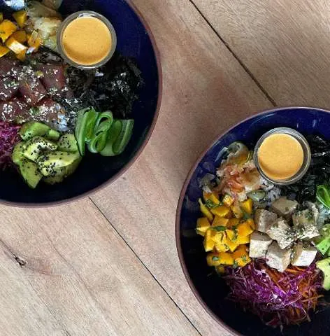

Soul Temple
Запись на занятия и управление школой в одном сервисе: клиенты, тренеры, группы и уведомления.
Создаю сайты, приложения и Telegram Mini Apps. Подключаю AI и автоматизирую то, что отнимает время.
Выбирайте глазами.

Записаться на сёрфинг. Найти, где поесть. Навести порядок в расписании. Вот что я разрабатываю.
Запись на занятия и управление школой в одном сервисе: клиенты, тренеры, группы и уведомления.
Кафе на карте и фотографии блюд от гостей. Сайт и Mini App, которые помогают выбрать глазами.
Расписание массажной практики. Запись через бота и Mini App, календарь администратора и переносы сеансов.
Можно прийти с идеей на салфетке или с готовым ТЗ. Вместе разберёмся, что действительно нужно бизнесу.
От страницы, которая знакомит с бизнесом, до сервиса с личным кабинетом, каталогом и удобной админкой.
Продукт под рукой у клиента: запись, заказ, каталог или программа лояльности. Подберу формат под вашу аудиторию.
Подключу AI к вашим данным и инструментам. Помогу сократить ручную работу с заявками, документами и повторяющимися задачами.
Обсуждаете задачу напрямую с тем, кто её разрабатывает. Я погружаюсь в процессы, показываю прогресс и остаюсь на связи.
Что должно стать проще для вас и ваших клиентов? Обсудим сценарии, ограничения и главное для первой версии.
Согласуем состав работ, этапы, сроки и стоимость. До начала разработки будет понятно, что вы получите.
Показываю работающие версии по ходу проекта. Проверяем основные сценарии и уточняем детали на живом интерфейсе.
Публикую продукт, помогаю начать работу и передаю исходники. Формат поддержки согласуем под ваш проект.
Стоимость зависит от сценариев, интеграций и объёма первой версии. После обсуждения задачи предложу состав работ и оценку. Можно начать с небольшого MVP и развивать его поэтапно.
Напишите, чем занимается ваш бизнес и какую задачу хочется решить. Готовое ТЗ не обязательно: помогу сформулировать требования и выбрать формат продукта.
Да. Сначала посмотрю текущее приложение и код, чтобы оценить объём изменений. Затем предложу план: исправления, новые функции, интеграции или развитие интерфейса.
Передам исходники и информацию для работы с продуктом. Поддержку, обновления и дальнейшую разработку можно включить в согласованный план сопровождения.
Расскажите о своей идее, бизнесе или задаче.
Начнём с простого разговора.